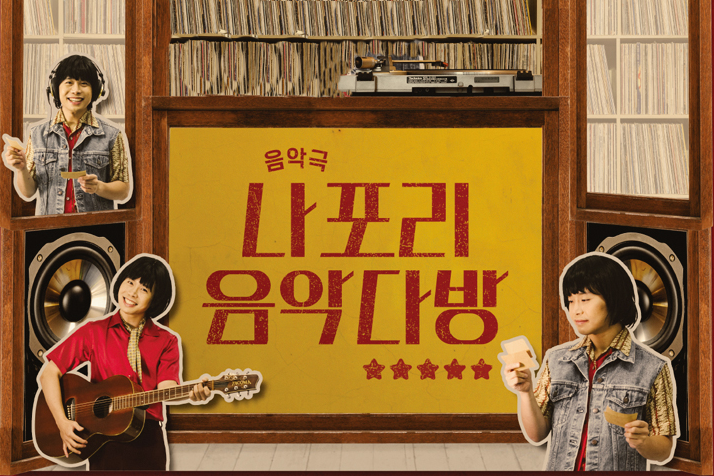

청춘들이 함께 감성으로 소통할 수 있는 나포리 음악다방
#음악극 #연극 #8월공연
TRACK1
과거와 현재가 공존하는 '나포리 음악다방'
과거 음악다방은 당시 노동자들이 퇴근길에 들러 음악을 들으며 노동으로 지친 마음을 달래던 청춘들의 꿈과 사랑이 빛나는 즐거움이 공존했던 장소였다. 지금은 거의 사라지다시피 했지만 '나포리 다방'으로 불렸던 이곳은 지금도 '나포리 커피숍'이란 이름으로 남아 당시의 분위기를 조금이나마 느낄 수 있게 해준다. 오랜 세월 동네를 지키며 한때 누군가의 아지트였던 실존하는 '나포리 음악다방'을 배경으로 허구의 이야기이지만 있을 수 있었던, 지금도 있을 수 있는 대한민국 청춘들의 과거와 현재, 미래가 소통하는 이야기를 하고자 한다.
TRACK2
대세는 복고! 그 시절 우리를 설레게 한 추억의 음악!
고고장에 모여 춤을 추고, 음악다방에서 음악을 들으며 포크송과 대중가요를 즐기던 80년대...그 시절의 노래, 좋아했던 장소, 나를 두근거리게 했던 가수들, 인생의 한때를 아름답게 해주었던 과거의 마음 따뜻한 추억을 모든 관객에게 선사할 예정이다. 오리지널 음악과 뉴트로 감성의 리메이크 음악을 모두 다루어 그때 그 시절 청춘들과 지금 우리 청춘들이 함께 감성으로 소통할 수 있는 장이 되길 바란다.
TRACK3
웃음과 감동의 힐링 추억여행
무언가 멈춰버린 것 같은 요즘, 단절된 관계에서 오는 스트레스가 일상이 되어버린 현대인에게 선보일 푸근한 음악다방의 풍경은 따뜨산 웃음을 불러온다. 이를 통해 숨 가빴던 산업화 시대가 우리에게 남긴 유산들을 되새김질하며 이 시대를 살아가는 당신에게 감동과 위로를 선사한다.
SYNOPSIS
아버지가 돌아가신 후, 방치되어있던 음악다방에 모여 유언을 개봉하는데...유언은 미처 전해주지 못했던 편지의 주인을 찾아주고, 그 사람을 위한 신청곡을 틀어주라는 것! 마치 DJ처럼...
누구든 그날의 주인공을 만들어주는 사연 읽기의 달인 DJ 오빠,
대학교에 가서 대학가요제에 나가는 게 꿈인 야간반 여고생,
입시학원 강사였지만 지금 방범대원인 다방 죽돌이...등
손님들의 숨겨진 이야기가 하나 둘 튀어나오기 시작하는데...?!
그들이 다시 만들어내는 뉴트로 음악다방 이야기!
writer
ASAC 2기 서포터즈
140 2022년 7월1일 5ASAC 서포터즈가 8월 공연을 소개합니다.